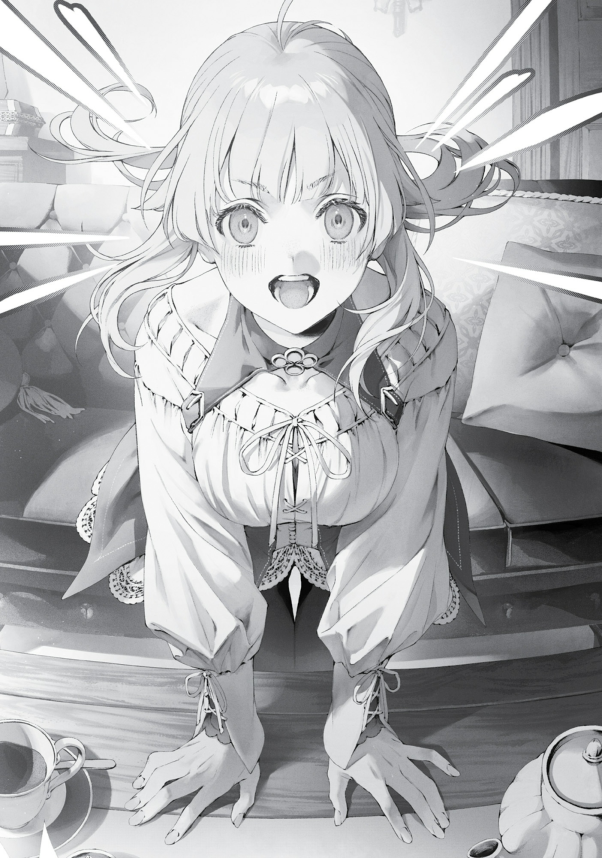

BIHEIRIL KRALLIĞI’NDAKİ savaştan bu yana birkaç ay geçmişti. İnsan-Tanrı, olanlardan sonra sessiz kalmıştı ve zaman geçtikçe yeni düşmanlar da ortaya çıkmamıştı. Ama bu benim işimi değiştirmiyordu tabii. Sessizce yolculuklarıma devam ediyor, seksen yıl sonra gerçekleşecek Laplace savaşı için hazırlıklarımı yapıyordum.
Yine de son zamanlarda daha çok evdeydim, çünkü öğrendiğim kadarıyla Eris ve Roxy aynı anda hamile kalmıştı! Geese’i yendikten sonra biraz ipin ucunu kaçırmıştım galiba, eh, ektiğini biçersin sonuçta! İşlerin bu şekilde ilerlemesinden memnundum ama hamileliğin onların kaderlerini zayıflatıp İnsan-Tanrı’nın hedefi haline getirebileceği söyleniyordu. Bu yüzden eşlerim hamileyken onların yanında olabildiğim kadar çok kalmak istiyordum.
Bu arada, günlerimi dünyadaki paralı asker üslerinden gelen istihbaratı işleyerek, Orsted’le bir sonraki hamlelerimizi konuşarak ve uzun zamandır ertelediğim aile zamanını yaşayarak geçiriyordum.
Bu, işte o günlerden birinin hikayesi. Orsted’le bir sonraki hedefim hakkında bildiklerimizi konuştuğumuz bir toplantı yapıyorduk. Görünüşe göre o krallığın tahtına geçecek olan kişi henüz gençti ama umut vaat ediyordu. Şimdiden bazı adımlar atıp gelecekte onu iyi bir şekilde kullanmak mantıklı görünüyordu.
Orsted, sıradaki hükümdarı kazanmanın yoluna dair herhangi bir yorum yapmadan sessiz kaldı. Bunun bir nedeni olmalıydı. Belki bu işi başarmada kilit rol oynayacak biri henüz devrede değildi. Ya da şu anda kesin bir yöntem olmadığını düşünüp beklemek gerektiğine inanıyordu.
Peki ben ne yapmalıydım?
Orsted’in bu muhteşem varis hakkında çizdiği portreye dayanarak aldığım notlara bakarak düşüncelere daldım.
Tam o sırada konuştu.
“Norn Greyrat’i evlendir.”
“Ne…?”
Bir anda, Orsted bu tuhaf cümleyi patlattı.
Orsted’in yanında konuşurken dikkatli olmaya çalışıyordum ama az kalsın “Ne saçmalıyorsun sen?!” diye bağırıyordum. Bu kadar garip gelmişti.
Şu an muhteşem varisi kazanmaktan bahsediyorduk. Orsted’in söyledikleri tamamen alakasız görünüyordu. Ama sonra düşünmeye başladım… Gerçekten alakasız mıydı?
Ve o an kafama dank etti.
“Yani,” dedim yavaşça, “siyasi bir evlilik mi diyorsun?”
Konuştuklarımız bağlamında en mantıklı şey buydu.
“Buna politik diyemem, ama geleceği düşündüğümde… Eh.”
“Yani demek istediğin… Bunu tek başıma başaramam mı?”
Bunu duymak sinir bozucuydu. Bu, Orsted’in benim bu inanılmaz varisi ittifaka ikna edemeyeceğime karar verdiği anlamına geliyordu. Bunu açık açık söylese rahatsız olmazdım—yani, tek başıma yapabileceğime ben bile pek güvenmiyordum. Onu nasıl ikna edeceğim hakkında hiçbir fikrim yoktu. Eğer Paul gibi etek düşkünü biri olsaydı ve onu yanımıza çekmenin tek yolu bir kadın vermek olsaydı, o zaman Orsted’in önerisi mantıklı olurdu.
Ama Norn söz konusu bile olamazdı.
Norn’un bir gün evleneceğini biliyordum, ama onu Paul gibi bir çapkına asla teslim etmezdim. Norn daha… dürüst biriyle evlenmeliydi. Ve o kişiyi ben onaylamalıydım—onu rastgele birine göndermem asla söz konusu olmazdı. Paul’un yüzüne bir daha bakamazdım. Aileyi, ne kadar yüce bir hedef için olursa olsun, asla bir kenara atamazsın.
“Hayır,” dedi Orsted.
“O zaman neden?”
“Norn Greyrat’ın çocuğu bana yardımcı oldu.”
“Yardım mı…? Yani bu Norn’la ilgili değil de, onun çocuğuyla mı ilgili?”
“İhtiyacım yok. O çocuk bu döngüde büyük bir öneme sahip olmayacak.”
Orsted dolambaçlı konuşuyordu. Hep bilmecelerle konuşurdu, ama şimdiye kadar olan konuşmalarımızdan ne demek istediğini çıkarabilmiştim. Temelde, bu bir ön hazırlıktı. Norn’un çocuğu bu döngüde önemli olmayabilirdi, ama önceki döngülerde Orsted’e faydası dokunmuştu, bu yüzden işi garantiye almak istiyordu—bunun gibi bir şeydi.
“Pekala.” Ayağa kalktım. Hala oturmakta olan Orsted’e yukarıdan baktım. Kaskını takmamıştı. Yine de her zamanki gibi ürkütücü görünüyordu, ama eminim ki benim yüzüm onunkinden bile daha korkutucuydu.
“Bunu bu kadar ısrarla istiyorsan, o zaman üç gün sonra öğlen, kuzey ormanında ol.”
Korkma, Norn. Onurunu koruyacağım. Orsted’le yüzleşmek zorunda kalsam bile geri adım atmayacağım. Paul, lütfen… Bana güç ver. Bu güçlü düşmanı alt edip hayatta kalmam için bana güç ver.
“Bekle. Yanlış anladın.”
“Öyle mi?”
“Bu iki asırdır tekrar eden döngüde bile umursadığım insanlar var. Norn Greyrat’ın çocuğu onlardan biri. Bana defalarca yardım etti. Bu yüzden onun bu dünyada yaşam hakkına sahip olmasını istiyorum. Ama şu anki şartlarda bu mümkün olmayacak.”
Gerçekten de Norn’u erkeklerle hiç görmemiştim. Mezun olmuştu, ama hala evde yaşıyordu, her zamanki gibi. Bu, tembellik yaptığı anlamına gelmiyordu elbette. Okul bağlantıları sayesinde büyü loncasına katılmıştı ve merkezi şubede idari işlerle uğraşıyordu. Loncada bir sürü erkek vardı, ama Norn onlarla pek ilgileniyor gibi görünmüyordu. Boş günlerinde bile dışarı çıkmıyordu; aksine, her zaman evde çocuklara veya ev işlerine yardım ediyordu. Öğrenciyken bile kimseyle çıktığını düşünmemiştim.
Açıkçası, Norn’un hayatı boyunca hiç evlenmeden yaşayacağını düşünüyordum.
Hmm. Bu dünyada statüsü olan insanlar genelde görücü usulü evleniyordu. Benimki biraz tartışmalı bir evlilikti, ama bana bağlantılar ve nüfuz kazandırmıştı. Belki de bu öneri o kadar da uçuk değildi.
“Tamam da, bir çocuk tek bir kişiden olmaz. Rastgele biriyle olacak çocuk aynı çocuk olmaz, değil mi?”
Sonuçta bir kraldan bahsediyorduk, yani bolca statüsü vardı, ama ben bunu hemen kabul etmeyecektim. Önce onu kendi gözlerimle görüp nasıl bir adam olduğunu anlamam gerekiyordu.
“Yoksa bu inanılmaz varis gelecekte Norn’un eşi mi oluyor?” diye sordum, Orsted’e sert bir bakış atarak. O ise kaşlarını çatmıştı. İfadesi her zamanki gibi ürkütücüydü, ama bu bakışı daha önce görmüştüm. Bu onun “Neden bahsediyorsun sen?” bakışıydı.
Kaşlarının uçları şaşkınlıkla kıpırdadı ve şöyle dedi:
“Hayır… Affedersin. Bunun o konuyla bir ilgisi yok.”
“Ha?”
“Bu başka bir mesele.”
Başka bir mesele mi…? Ah, demek istediği buydu.
“Yani bu bir sonraki ülke için stratejimizle ilgili değil mi? Sadece Norn’un aşk hayatından mı konuşuyoruz?”
“Evet.”
Hımm. Pekala, o zaman.
“Orsted Bey.”
“Evet?”
“Konuyu değiştirdiğinizde, ‘Bu arada…’ ya da ‘Konu değişik ama…’ gibi bir giriş yapmanız iyi olur.”
“Doğru söylüyorsun. Gelecekte buna dikkat ederim.”
Bu mesele hallolduğuna göre, yeniden koltuğuma yaslandım.
Kendimi toparladıktan sonra sohbete geri döndüm.
“Peki, Norn kiminle evleniyor? Hep aynı kişiyle mi evleniyor?”
“Evet. Bildiğim kadarıyla, Norn Greyrat’ın eşi hiç değişmez.”
Yani Norn ve bu kişi kaderin bir cilvesiyle birbirine bağlıydı. Şanslı herif. Hayatını yaşarken birdenbire gidip benim Norn’umla evleniyor. Eğer tembel bir serseri çıkarsa, onu kaçırır ve adam ederim—Spartalı usulü. Sabah uyanır uyanmaz yatana kadar tek yaptığı şeyin eğitim olmasını sağlarım. İşim bittiğinde ağzından sadece “evet,” “lütfen” ve “teşekkür ederim” kelimeleri çıkardı. O zaman Norn’u aldatmayı aklından bile geçiremezdi.
En azından, Norn’la evlenmek isteyen biri Eris’ten bir yumruk yemeden geçemezdi—
“Ruijerd Superdia.”
Düşüncelerim aniden durdu. Gözümün önünde beş yüz yaşlarında, kel bir adamın yüzü belirdi.
Durun, artık kel değil.
Yeşil saçlı, yakışıklı bir adam.
“Onların çocuğu, son Superd savaşçısı olur. Ruijerd ileriki yaşlarında vebaya yenik düştüğünde, Norn onun Superd’lerin onurunu geri kazandırma arayışını devralır ve iblislere karşı insanların safına katılır. Laplace’a son darbeyi indirendir. Kaderi ağır, acı dolu ve herkes tarafından unutulmuş bir hikaye… Ama bu döngüde birçok Superd hayatta kaldı. Büyük ihtimalle onun omuzlarına böyle bir yük düşmeyecek.”
Zihnim donmuşken, Orsted geçmiş döngülerde kızın hayatını hatırlayıp anlatıyordu. Laplace’ı yendiğine göre, muhtemelen Orsted’le birlikte çalışmıştı. Öyleyse… Evet, Orsted’in neden bunu gündeme getirdiğini anlayabiliyordum.
Ama şimdi ne olacak? Bu sefer işler farklıydı. Ben buradaydım ve yer değiştirme olayı yaşanmıştı.
Norn ve Ruijerd’in önceki döngülerdeki ilişkisi nasıl gelişmiş olursa olsun, bir şeyden emindim ki bu döngüde onların Orsted’in bildiği aşk hikayesine dönüşmesi henüz mümkün olmamıştı. Norn’a durup dururken böyle bir evlilik önersem, muhtemelen karşı çıkardı. Sonuçta arada beş yüz yıllık bir yaş farkı vardı. Ruijerd de bu duruma şaşırabilirdi.
Ruijerd’in aileye katılmasından şikayetçi değildim ama böyle bir kararı tek başıma veremezdim. Kesinlikle olmaz.
“Eğer bana sorarsanız,” dedim yavaşça, “bu kararı Norn’un vermesi gerektiğini düşünüyorum.”
“Pekala. Acele etmeye gerek yok,” diye cevapladı Orsted başını sallayarak.
Bundan sonra, bana geçmiş döngülerdeki Norn’u anlattı. Benim var olmadığım dünyalarda Norn bir maceracı olmuştu. Maceralarında şarkılar söyleyip baladlar yazan, şarkı söyleyip dans edebilen ve dövüşebilen bir ozandı. Aynı ilgi alanlarına sahip kişilerle bir grup kurmuş ve Kuzey Kıtası’nda yolculuk etmişti. Kılıç ve büyü becerileri en iyi ihtimalle orta seviyedeydi. B-Seviye onun sınırıydı. Bu yüzden, bir görev sırasında partisi canavarlar tarafından tamamen yok olmuştu.
(Otomatik Çevirmen Notu: Balad, şiirin müziğe uyarlanmış halidir. Bu müzik türü, tamamen efsaneler hakkında veya önemli olaylar hakkında olabileceği gibi, aşk veya sevgiyi konu alan bir şiir de olabilir.)
Norn, ölümden sadece bir adım uzaktayken kim çıkageliyor dersiniz? Tabii ki bizim Ruijerd. İlerleyen canavarları bir bir parçalayıp Norn’un hayatını kurtardı. Norn için bu ilk görüşte aşktı. O andan sonra Ruijerd ile beraber Superd ırkını bulma yolculuğuna katıldı.
Başta Ruijerd pek bir karşılık vermemişti, ama sonra Superd’ların bir salgınla yok olduğunu öğrenip kendini umutsuzluğa kaptırdı. Norn, kendini onu teselli etmeye adadı ve bu sayede Ruijerd’in kalbini kazandı. Evlenip Biheiril Krallığı’nın bir köşesinde birlikte yeni bir hayat kurdular. Bir süre sonra çocukları oldu ama ardından Ruijerd, diğer Superd’lara bulaşan aynı hastalığa yakalanıp hayatını kaybetti ve Norn yalnız kaldı. Çocuklarını büyüttü ve yaşlılıkla hayata gözlerini yumdu.
Hikaye biraz yalnız ve buruk gibi görünüyordu, ama Orsted, yüzünde huzurlu bir ifade olduğunu söylemişti. Aşk hikayesi olarak kulağa tuhaf geliyordu ama sonuçta bir erkekle bir kadının arasındaki şeyleri yalnızca onlar bilir.
Bu sefer işler Norn için böyle gitmemişti. Acaba Ruijerd ile onu tekrar bir araya getirmek doğru olur muydu? Norn, sevmediği biriyle mutlu olabilir miydi? Ruijerd buna açık olur muydu?
Bunu kendi kendime dert etmenin bir anlamı yoktu. Önemli olan Norn’un nasıl hissettiğiydi. O yaşta biri için aşk vakti gelmiş sayılırdı, ama Norn hiç erkeklere ilgi gösteriyor gibi görünmüyordu. Bir gün aniden birini eve getirip, “Norn’un babasından onun elini istemeye geldim,” derse ne olurdu? O zaman da ben, “Kime baba diyorsun sen?” ya da “Ben onun abisiyim,” falan derdim.
Ama konu dağılmaya başladı.
Bu tarz şeyleri Norn’a sormak için doğru kişi ben değildim. Bana içini açabileceğini sanmıyordum. Başka bir kadın daha iyi olurdu—ama Aisha değil. Onu göndersem kesin bir sorun çıkardı. Sylphie veya Roxy mi? Norn, özellikle Roxy’ye saygı duyuyordu; o yüzden belki de Roxy en iyisi olurdu.
Eğer saygıdan bahsediyorsak, Eris de iş görürdü. Uzun zamandır Norn’a kılıç eğitimi veriyordu. Mezun olduğundan beri her sabah beraber koşuya çıkıyor, dövüş pratiği yapıyorlardı. Onlara baktığınızda Norn’un Eris’e ne kadar hayran olduğunu görebilirdiniz. Ama maalesef Eris’in repertuarında “dolaylı soru sorma” gibi bir yetenek yoktu.
Hayır, bu işi Roxy yapmalıydı. Bir saniye, durun. “Dolaylı soru” konusunda yüksek istatistikleri olan Sylphie’ydi. Saygıdan çok başka bir şeydi belki, ama Norn, Sylphie’yi bu evde bir nevi lider olarak görüyor gibiydi.
Ya da hepsine birden danışmalı mıydım? Evet, dördümüz bu iş için kimin daha uygun olduğuna karar verebilirdik. Sylphie, Roxy ve Eris’in fikirlerini almak daha iyi olurdu. Ama üçü yeterli miydi? Lilia ve Zenith’e de danışmalı mıydım?
Bu düşüncelerle oturma odasındaki kanepede oturmuş kafa patlatıyordum.
“Ooo.” O sırada oturma odasına giren birine gözüm takıldı—Norn.
“Döndüm, Abi,” dedi.
“Hoş geldin.”
Büyüdükçe ne kadar güzel bir kadın olmuştu. Gençliğinde Zenith nasıl görünüyorsa, Norn da öyleydi: dolgun bir göğüs yapısı ve ipek gibi sarı saçlarıyla. Muhtemelen okulda erkekler arasında oldukça popüler olmuştur.
“Ne…?” diye sordu Norn bir süre sonra.
“Bir şey… Yok bir şey. Şey, Norn, bir çay ister misin?”
“Evet, lütfen.”
Masadaki bardaklardan birini kaptım, içine hızlıca çay doldurup ona uzattım. Norn bardağı alırken yüzünde şüphe dolu bir ifade belirdi.
“Bu soğuk.”
“Ne?!”
Daha az önce Lilia’dan bir demlik çay hazırlamasını istememiş miydim? Demliğe dokundum, haklıydı. Elimdeki bardak da soğuktu. Ne oluyor burada? Birisi bana saldırıyor olabilir mi?!
“Dur bir dakika.” Aklıma bir şey geldi. “Bu arada, bugün işin yok muydu?”
“Evet, yeni geldim zaten.”
Pencereden dışarı baktım. Artık akşam olmuştu. Orsted ile olan toplantım bitmiş, eve dönüp Lilia’ya çay hazırlatmıştım. Bu öğleden sonra olmuştu, demek ki aradan iki saat kadar geçmiş.
“Doğru, pardon. Sanırım dalıp gitmişim.”
“Yaşlanıp bunamadan önce biraz beklesen iyi olur…” diye takıldı Norn. “Yeni bir demlik hazırlayayım. Sen otur, Abi.”
“Evde başka kimse yok mu?”
Sylphie ve Eris’in az önce burada olduklarına emindim. Roxy ise… Bu saatte muhtemelen hâlâ evde olmazdı.
“Sylphie ve Eris, ben gelirken çocukları yürüyüşe çıkarmak için evden çıktılar. Lilia da alışverişe gitti.”
“Aisha?”
“Bilmiyorum. Muhtemelen hâlâ paralı asker grubuyla birliktedir, değil mi?” dedi Norn, çaydanlığı mutfağa taşırken.
Doğru ya, anlaşılan evde kimse yoktu. Sadece ben ve Norn… Aslında, daha iyi bir fırsat isteyemezdim. Evet, bunu doğrudan halledecektim. Lafı dolandırmaya gerek yoktu. Eğer bu işe yaramazsa, başka bir yol denerdim. Norn’a karşı dürüst olmanın yolu buydu.
Evet, tam olarak böyle. Norn’un hoşuna gitmezdi, sırf her şeyi ayarladıktan sonra gelip onunla konuşmam. Sonuçta evlenecek olan oydu.
İşe Norn’dan başlamalıydım.
“Al bakalım.”
Düşüncelere dalmışken Norn geri döndü ve önüme bir fincan çay koydu.
“Sağ ol.” Gözlerimi Norn’a çevirdim, karşımda tam karşıma otururken ona baktım, sonra çaydan bir yudum aldım. “Çay demleme konusunda bayağı ustalaşmışsın, ha?”
“Okulda öğrendik.”
“Lilia’dan değil mi?”
“Lilia… Sanmıyorum, bana öğretirdi.”
E, doğru tabii. Çay demlemeyi Lilia’dan öğrenmek istese, muhtemelen “Gerek yok, bu benim işim,” derdi.
“Eminim sorsan öğretirdi.”
“Belki. Ama madem okulda böyle bir imkan vardı, onu değerlendirdim. Ayrıca, evde çay yapma fırsatım pek olmuyor.”
“Öyle tabii.”
Okuldayken öğrenci konseyi toplantıları, yatakhanedeki odası ve şimdi de muhtemelen iş yeri derken, evde böyle şeyler yapmak pek denk gelmemiştir. Görünüşe göre bu durumdan memnun gibiydi.
Her neyse, biraz hafif sohbetle ortamı ısıttığıma göre, artık asıl meseleye giriş yapmanın zamanıydı. Ama nasıl? Nereden başlamalıydım?
“Şey… Hmm, şey yani…” Boğazımı temizlerken Norn, yüzünde hafif bir şüphe ifadesiyle bana baktı.
“Bir şeyi unuttun mu yoksa?” diye sordu.
“H-hayır, kesinlikle hayır. Çay çok güzel olmuş,” dedim ve fincanımdaki sıcak çaydan bir yudum daha aldım. Tadı öyle olağanüstü değildi ama tükürtecek kadar kötü de değildi. Sıradan bir çaydı, tıpkı Norn gibi. Güzel ama göz alıcı değil.
Yani, hoş. Ama bunu bir kenara bırakalım…
“Bu arada, Norn, şey… Son zamanlar nasıl geçiyor, ha?”
“Hangi konuda?”
“İşin, mesela. Nasıl gidiyor?”
“Her şey normal. Bir üst düzey çalışan hâlâ bana işi öğretiyor… ama sanırım fena gitmiyorum. Tabii, eminim Aisha olsa benden çok daha iyi yapardı.”
“Kendini onunla kıyaslamayı bırakmalısın,” dedim. Norn itaatkâr bir şekilde başını salladı. Aisha’nın kendi işi vardı. Aynı işi yapmadıkları sürece kıyaslamalar kimseye bir fayda getirmezdi.
“Peki, bu üst düzey çalışan…” dedim, konuyu değiştirmeye çalışarak. “Nasıl biri? Havalı biri mi?”
“Çok zarif biri. Sanırım sen de onunla bir kere konuşmuştun, Abi. Hatırlıyor musun, ben öğrenci konseyi başkanıyken başkan yardımcısı olan kişi?”
“Şey… Şu iri yarı, hayvan ırkından olan çocuk muydu?”
“O değil. Kadın olan.”
Ah, bir kadın. Evet, tamam, hatırladım. Adını çıkaramıyordum ama böyle biri vardı. Aslında, Norn bu işi aldığı zaman ondan bahsetmiş olmalıydı. Aynı departmanda olduklarından söz ettiğini hatırlıyorum.
“Kadın ha… Ama hiç erkek yok mu etrafta, hı?”
“Elbette var.”
“Peki, bu erkeklerden biri… şey… havalı mı?”
“Bazıları öyle, bazıları değil.”
Demek havalı biri var. Büyük bir haber bu.
“Abi, ne demeye çalışıyorsun?”
“Sakin ol Norn, hemen sonuçlara atlama.”
“Sakin olmayan sensin,” diye karşılık verdi.
Tabii ki sakindim! Her zaman soğukkanlı ve topluyumdur. RRR Rudeus! (Rahat, Refah İçinde, Rüzgar Gibi!) Ve hiçbiri delirmiş anlamına gelmiyor!
“Norn, şey… Mesela, diyelim bu havalı kişi… Sence ne kadar havalı?”
“Benden hoşlanıp hoşlanmadığını mı soruyorsun?”
“Şey, evet?”
Lanet olsun. Direkt sordum.
“Hayır, hoşlanmıyorum diyebilirim.”
Ah, salla gitsin.
“Peki, tesadüfen hoşlandığın biri var mı?”
Uzunca bir duraksama oldu ve sonra—
“Evet.”
Var! Biri olduğunu söyledi!
“Ş-şaka yapıyorsun! Var yani? E tabii, artık yetişkin bir kadınsın. Olması gayet normal. Hiçbir gariplik yok bunda. Tabii ki.”
“Sen ise gayet garip davranıyorsun,” dedi Norn.
“Ne?”
Ben garip değilim. Garip olan dünya! Bu dünya bana göre tuhaf, ben değilim!
“Şey, peki… Nasıl biri bu hoşlandığın kişi?” diye devam ettim.
“O… daha yaşlı biri.”
“Hmm, anladım.”
“Güvenebileceğim biri.”
“Hmm…”
“Ve her zaman benimle ilgileniyor.”
Bu üç kriteri alırsak, bu kişi…
“Beni mi kastediyorsun?”
“Senin kafanda bir problem mi var?”
“Affedersin, biraz kaptırdım kendimi.”
“O, senden çok daha yaşlı Abi. Kriz anlarında asla soğukkanlılığını kaybetmez. Sakin ve ağırbaşlı birisi.”
“Biliyor musun, son zamanlarda senin abin de kriz anlarında soğukkanlılığını kaybetmemeyi başarıyor.”
“Bu şekilde davrandığını düşünürsek bunu söylemen pek doğru olmaz.”
Oof…
Ama tamam, şöyle bir toparlayalım: Benden çok daha yaşlı ve ağırbaşlı biri mi? Kahretsin…
“Benden çok daha yaşlı derken… Mesela, on yıl falan mı daha yaşlı?”
“Daha yaşlı.”
“Şey… Sanırım, bir ‘baba kompleksi’nden bahsediyoruz?”
“Baba kompleksi mi…? Eh, yaşlı erkekleri sevdiğim doğru.”
Yaşlı dediğine göre, yirmi yıldan fazla bir farktan bahsediyor olmalıydı. Yani kırklı ya da ellili yaşlarda biri. Ağırbaşlılık kısmını da eklersek, aklımda biraz daha toplu, ağırlık merkezi aşağıda olan, ciddi görünümlü bir adam canlanıyordu. Geçmiş hayatımda “ağırbaşlılık” kelimesinin yanına bile yaklaşamamıştım tabii.
Gözümde, yağlı suratlı, kötü bir ticaret şirketinin CEO’su gibi bir yaşlı adam belirdi. Yaş farkına laf edecek değilim ama ne şekilde düşünürsem düşüneyim, Norn’un bir “sponsor” peşinde olduğunu düşündürecek bir tablo ortaya çıkıyordu.
Hayır, buna izin veremem! Kesinlikle hayır!
Ama dur, ya bu adam düşündüğümden daha samimi çıkarsa? Aslında yaş farkı bir şey ifade etmeyebilir. İnsanları dış görünüşlerine göre yargılayamazsınız.
“Zaten bu aşktan bir sonuç çıkmayacağını kabul ettim,” dedi Norn.
“Ah… Evli mi yoksa?”
“Hayır… Eşini kaybettiğini söyledi.”
“Kaybetti” ha? Belki de boşandığını ima etmek için uygun bir yol bulmuştu. Ya da belki de karısı, adamın yüzüne boşanma evraklarını çarpmıştı.
…Gerçeği kabullenmemek için elimden geleni yapıyordum.
“Anlaşılan, ona eşini hatırlatıyormuşum.”
Tamam, bu durumda kesinlikle olamaz. Evet, imkansız. Böyle bir şey nasıl söyler.
“Bu, en eski numaralardan biri.”
Yaşlı bir adam, kendisinden çok daha genç bir kadına gelip, “Bana ölen karımı hatırlatıyorsun,” derse, başka ne olabilir ki? Bu cümlenin altında yatan anlam, “Seni kendime eş olarak görebiliyorum,” değilse neydi?
Ama dur bir saniye. Bu aslında bir tavlama cümlesi gibi durmuyor. Daha çok şöyle söyler gibi: “Karım gibi biri değilsin, senin gibi birini daha önce hiç tanımamıştım.” Evet, bu daha iyi bir cümle bu olurdu.
“…Beni baştan çıkarıp çıkarmadığını mı soruyorsun?” Norn ellerini yanaklarına götürdü, hafifçe kızarmıştı. Bu fikir hoşuna mı gitmişti yoksa? Ah, doğru ya. Norn, ondan hoşlanıyordu.
Ama Norn, belki de sana umut veriyor. Şimdi bunu söylesem kavga çıkar, o yüzden içimden dedim.
“Neden birden bu kadar çok soru soruyorsun ki?”
“Hı? Şey, bu…”
“Bir şeyler çeviriyorsun, değil mi?” Norn bana gözlerini dikti. Bakışları, “Ben dürüst davrandım, sıra sende” diyordu. Bu kadar açık olmasını beklememiştim. Onun biriyle ilgilendiğini anlasam bile yeterdi.
“Bak, sen biraz önce söylediklerinden sonra bunu açmak istemezdim ama…”
“Tamam.” Ben hafifçe ona doğru eğildim, o da geri çekildi.
“Gerçek şu ki, Norn,” dedim. “Seninle ilgili bir tür evlilik teklifi geldi.”
Norn birkaç saniye donup kaldı. Gözleri kocaman açılmış, dudakları hafifçe büzülmüş haldeydi. Bana adeta bakışlarıyla meydan okuyordu.
“Bir teklif…” diye tekrarladı. “Pekâlâ. Kabul ediyorum.”
“Yok, anladım. Daha fazla bir şey söyleme. Az önce söylediklerinden sonra bunu unutalım gitsin.”
“Hayır, dediğim gibi, kabul ediyorum.”
Ona baktım, yüzümdeki şüphe açıkça belliydi.
“Ama sen… Senin zaten hoşlandığın biri yok mu?”
“Fark etmez. Zaten hiçbir yere varacağı yok.”
Norn bir an düşündü, sonra devam etti.
“Biz soylu değiliz ama senin bir statün var, ve arkadaşlarım bir gün böyle bir şey olabileceğini söylemişti. Ayrıca, senin dünyanın her yerinde bağlantıların olduğunu öğrendiğimden beri böyle kullanılmayı bekliyordum.”
“‘Kullanmak’ derken? Ailemi piyon olarak kullanmam,” dedim, biraz sert bir tonla.
Norn’un gözleri büyüdü, sonra başını eğdi.
“Tabii ki… Özür dilerim.”
Ne iyi bir kız.
“Norn, eğer istemediğini söylersen bu fikri hemen rafa kaldırırız.”
“Hayır… Karşı değilim. Bana bunu açtığına göre, demek ki diğer kişi kötü biri değil, değil mi?”
“Yani, sanırım.”
Kötü biri değildi… En azından, ben öyle düşünmüyordum. Biheiril Krallığı’ndaki savaş sırasında iyi anlaşmışlardı. Ruijerd onurlu bir adamdı.
“Şey… Yani, evlenmeye gönüllü değilim ama tamamen karşı da değilim. Eğer bu hiç yaşanmamış gibi davranırsak minnettar olurum, Abi. Ama tabii diğer kişi ısrar ederse, o zaman devam edebilirsin. Benim için endişelenmene gerek yok…”
Norn bakışlarını başka tarafa çevirdi.
Pek istekli görünmüyordu. Eğer ben istersem dediğimi yapardı, hepsi o kadar. Bu, benim için kullanışlı bir durum olabilirdi, ama onun için hiç de öyle değildi.
“Diğer kişiyle henüz konuşmadım, o yüzden sorun değil.”
“Anladım… Teşekkür ederim.”
Kusura bakma Orsted, ama Norn’un istediği buysa, bu fikri çöpe atarız.
Bir süre sessizlikten sonra Norn, “Bu arada, nasıl biriydi? Soylular arasından biri miydi? Yoksa Asura asillerinden biri mi?” diye sordu.
“Yok, öyle biri değil… Ama tanıyorsun onu, Norn.”
“Tanıyorum mu…? Ah, Zanoba’yı mı diyorsun?”
“Onun evlenecek biri olduğunu sanmıyorum.”
Zanoba’yı bu işten uzak tutmak en iyisiydi. Julie ona aşk oklarını yağdırsa da, ne ona ne de Ginger’a en ufak bir ilgi gösteriyordu. Hayatını figürleriyle geçirmeye kararlıydı, belli ki.
“Ruijerd’di,” dedim, sonunda ismini açıklayarak.
Ne olduğunu anlamadan Norn birden bana doğru eğildi, iki eliyle masaya dayandı. Yüzünde ciddi bir ifade vardı, yanakları kıpkırmızı kesilmişti. Öfkeli görünüyordu.
Neydi şimdi bu? Yanlış bir şey mi söyledim?
Norn’un Ruijerd’e büyük bir saygısı vardı, bu yüzden ona bu tür bir gözle bakmadığı açıktı.
Tamam, anladım. Kusura bakma Norn, abicik hata etti. Artık bana öyle sert bakmayı bırakabilirsin.
“Bak, saçmaladım. Farklı bir tür olmasını bir kenara koy, yaş farkı çok büyük, sen bile—”
“Lütfen bu teklifi kabul et!”
Norn benim sözümü keserek, sesi heyecan ve mutlulukla dolu bir şekilde bağırdı.
Tahmin ettiğiniz gibi—ya da doğrusu, beklediğim gibi diyelim—Norn’un gönlünü kaptırdığı kişi Ruijerd’di.
Meğerse küçükken ona hayranmış ve o çocukça hayranlık zamanla romantik duygulara dönüşmüş. Biheiril Krallığı’nda geçirdikleri süre boyunca da bu hislerini netleştirmiş: Ruijerd’e âşıkmış.

Ama Norn, Ruijerd’in geçmişini bildiği için onun duygularına karşılık vermeyeceğini düşünüyordu. Bu yüzden, gerçek hislerini içinde saklayarak hayatına devam etmeye razı gelmişti.
Ben ise göğsüme bir elimi koyup, “Tamamdır. Bana bırak bu işi,” dedim.